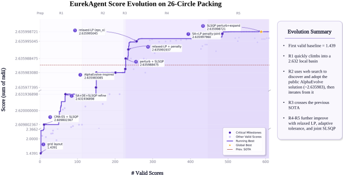
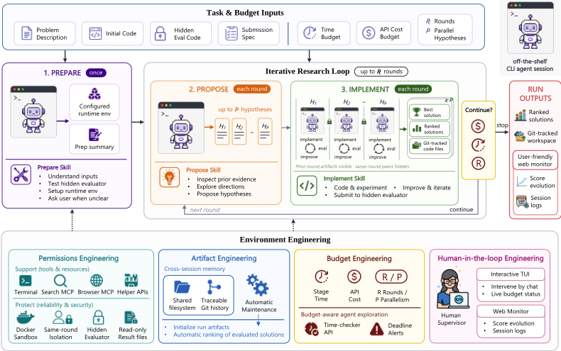
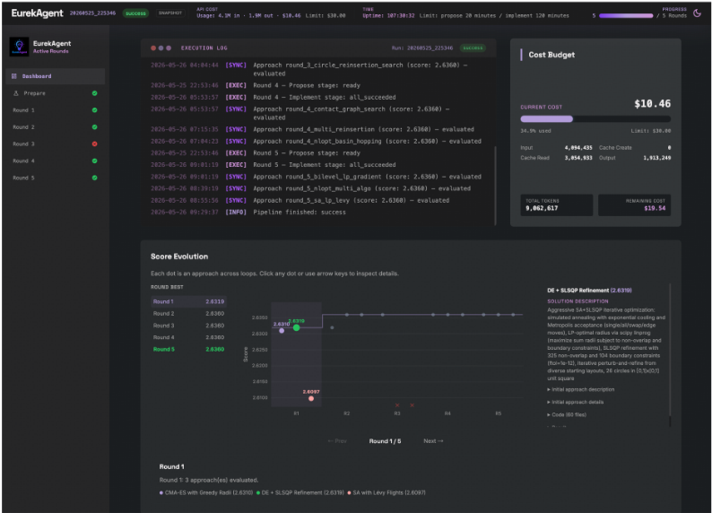
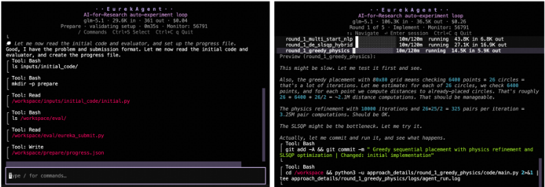

EurekAgent：Agent 环境工程就是自主科学发现所需的一切
论文针对自主科学发现 Agent 的可靠性问题：现有系统多用固定工作流预设研究行为，而通用 CLI Agent 能力已足够强，直接放权又会引发 reward hacking 与评测污染。作者提出'环境工程'范式，认为瓶颈正从设计工作流转向设计 Agent 运行环境，并实现 EurekAgent：不规定研究流程，仅用 prepare-propose-implement 三阶段外层循环协调现成 CLI Agent，环境层提供四类机制——permissions engineering（Docker 隔离、隐藏评测器安全接口、GPU 默认拒绝、同轮隔离）、artifact engineering（文件系统+Git 作为共享长期记忆）、budget engineering（时间与 API 成本双轴控制、断点恢复）、human-in-the-loop engineering（终端 UI 与 Web 监控）。关键结论：在数学、内核工程与 MLE-Bench Lite 子集上取得新 SOTA，26-circle packing 仅耗约 $11 API 成本，MLE-Bench 子集 any-medal 率 85.71%，且用开源 GLM-5.1 即可与闭源基线竞争。
现有自主科研 Agent 系统（如 AlphaEvolve、AIDE）通过固定工作流预设研究行为，编码了过强的流程假设；而通用编码 Agent（Claude Code、Codex）能力已足够强，直接信任 Agent 又会带来评测污染、工件操纵等 reward hacking 与可观测性失败。论文主张：随着通用 Agent 变强，自主科学发现的瓶颈正从'规定 Agent 工作流'转向'工程化 Agent 运行环境'，即构建能放大有益行为（开放探索、系统化工件管理、Agent 间协作）并抑制有害行为（评测篡改、高摩擦人工监督）的环境。
EurekAgent 以现成 CLI Agent（Claude Code + GLM-5.1，配 Web Search Prime MCP 与 Playwright MCP）为基本节点，用三阶段外层循环组织活动：prepare 阶段一次性搭建可靠运行环境并可请求人工澄清；每轮 propose 阶段（fan-in）生成最多 P 个候选假设，implement 阶段（fan-out）为每个假设启动独立并行会话与独立 workspace。环境工程沿四个维度展开：(1) permissions engineering：run 级 Docker 隔离、隐藏评测器仅经安全评分服务暴露、controller-owned 文件防篡改 hook、同轮实现会话相互隔离、GPU 默认拒绝须经 helper API 申请；(2) artifact engineering：文件系统+Git 历史作为共享长期记忆，保存阶段交付物、排名历史方案与搜索缓存，支持可追溯与断点恢复；(3) budget engineering：墙钟时间与 API 成本双轴限制，主动时间查询 API 与被动截止警告注入，成本超限即中止并保留快照；(4) human-in-the-loop engineering：终端 UI 与 Web monitor 提供会话轨迹、分数演化与人工介入入口。Agent 在这些边界内自由选择研究策略。
在三个数学任务（26-circle packing、Erdős' minimum overlap、first autocorrelation inequality）上全部刷新 SOTA，且保持 training-free；26-circle packing 总 API 成本低于 $11，三个数学任务平均 API 成本低于 $17
GPUMODE TriMul 内核工程任务（A100 本地复评）：最佳内核比最强重新评分的排行榜方案提升约 4.3%，比 TTT-Discover 提升约 10.8%；前四个方案的 median runtime 均低于 2031 µs
MLE-Bench Lite 自选七任务子集：any-medal 率达 85.71%（每任务单次运行）为所有方法最高；在使用非商业开源模型的方法中 gold-medal 率最高（基线均使用闭源商业模型，EurekAgent 使用开源 GLM-5.1）
与 FunSearch、AlphaEvolve、AIDE 等用固定工作流（种群演化、解树、角色分工）规定核心行为的系统不同，EurekAgent 把强通用 CLI Agent 当作基本节点，不预设研究流程，而将环境工程（权限、工件、预算、人在回路）作为一等设计目标系统化；相比 MLE-STAR 的泄漏检查、CORAL 的隐藏评分器等任务特定防护，它把这些可靠性机制泛化为通用环境层，并论证复杂 Agent 场景下的可靠性不能完全交给提示工程。
相关度级别：high
命中能力域：3.1 上下文工程与记忆 | 3.3 Agent 架构与工具使用 | 3.4 多智能体协作 | 3.5 评测与可靠使用
理由：直接命中多个团队能力域：3.3（Agent loop/harness 设计、MCP 工具接入、GPU/时间 helper API 等工具接口、单 Agent 执行可靠性机制）；3.1（文件系统+Git 作为跨会话共享长期记忆与结构化上下文组织，排名历史方案作为下一轮上下文）；3.4（多会话并行编排、fan-in/fan-out 任务分解、同轮隔离与跨轮经验积累、人在回路多 Agent 流程）；3.5（防 reward hacking 的可靠性防护、时间与 API 成本双轴预算工程、MLE-Bench 评测实践、人机协作界面）。其核心论点'用环境约束而非提示约束保障 Agent 可靠性'与团队构建工程自动化工具时面临的评测可信、资源管控、人工监督问题高度一致，且代码已开源，harness 模式可直接借鉴。
建议动作：深入精读并做内部分享
arXiv:2606.13662v2 [cs.AI] 12 Jun 2026
Amy Xin 1 , Jiening Siow 1 , Junjie Wang 1 , Zijun Yao 1 , Fanjin Zhang 2 , Jian Song 1 , Lei Hou 1 , Juanzi Li 1
1 清华大学计算机科学与技术系 2 中国人民大学信息学院
{xin-x25, xiaojn25}@mails.tsinghua.edu.cn
基于大语言模型（LLM）的 Agent 在自动化科学发现方面展现出日益增长的潜力。在给定可优化指标和执行环境的情况下，它们能够提出、验证并迭代科学解决方案，并且已经产出了优于人类设计方法的结果。随着模型能力的持续提升，我们认为自主科学发现的瓶颈正在从规定 Agent 工作流转向设计 Agent 环境——即塑造 Agent 行为的资源、约束与接口。我们将这一转变界定为环境工程（environment engineering）：构建能够放大富有成效行为的环境，例如开放式探索、系统化的工件管理以及 Agent 间协作，同时抑制有害行为，例如奖励劫持（reward hacking）和高摩擦的人类监督。我们提出了 EUREKAGENT，一个面向指标驱动自主科学发现的环境工程化 Agent 系统。EUREKAGENT 从四个维度对环境进行工程化：权限工程（permissions engineering），用于实现有界的 Agent 执行与隔离评估；工件工程（artifact engineering），用于实现基于文件系统和 Git 的协作；预算工程（budget engineering），用于实现预算感知的探索；以及人在回路（human-in-the-loop）工程，用于实现便捷的人类监督与干预。EUREKAGENT 在多项数学、内核工程和机器学习任务上取得了新的最先进（state-of-the-art）结果，其中包括以不到 11 美元的总 API 成本发现的新的最先进 26 圆填充（circle packing）结果。我们开源了代码和结果 1，并呼吁将环境工程作为开发可靠自主研究 Agent 的核心研究方向。

1 https://github.com/THU-Team-Eureka/EurekAgent
| Mathematics.Circle Packing ( ↑ ) | Mathematics.Erd˝ os' Min. Overlap ( ↓ ) | Mathematics.1st Autocorr. Ineq. ( ↓ ) | Kernel Eng..TriMul ( ↓ ) | Machine Learning ).MLE-Bench ( ↑ | |
|---|---|---|---|---|---|
| Prev. Best Human | ∼ 2.634[5] | 0.380927[7] | 1.509730[18] | 2096 . 04 µ s | N/A |
| Prev. Best AI | 2.635986[27] | 0.380876[30] | 1.502863[30] | 2247 . 78 µ s [30] | 71.43%[31] |
| EUREKAGENT | 2.635 999 | 0.3808 70 | 1.5028 61 | 2005.03 µs | 85.71% |
| | Mathematics.Circle Packing ( ↑ ) | Mathematics.Erd˝ os' Min. Overlap ( ↓ ) | Mathematics.1st Autocorr. Ineq. ( ↓ ) | Kernel Eng..TriMul ( ↓ ) | Machine Learning ).MLE-Bench ( ↑ |
大语言模型（LLM）正日益将科学发现从人工试错转变为计算探索：在那些研究进展可以通过可优化指标来衡量的领域中，基于 LLM 的 Agent 能够自主地提出假设、运行实验、观察反馈并迭代解决方案，在减少人类方法调优工作量的同时，大幅扩展了探索的规模。基于 LLM 的 Agent 已经在数学、算法、内核工程、机器学习工程等多个领域的任务中取得了强劲的成果 (Jiang et al., 2025; Novikov et al., 2025; Lange et al., 2025; Wang et al., 2025; Yuksekgonul et al., 2026; Ouyang et al., 2025; Chan et al., 2025; Yang et al., 2025; Zhang et al., 2026; Li et al., 2025)。我们将这一趋势视为科学研究中正在涌现的范式转变：人类日益专注于选择有价值的方向、制定有意义的指标并监督有效性，而 Agent 则执行大量的方法学探索。
大多数现有的自主研究系统通过预先规定研究专用的 Agent 工作流来实现这一愿景。AlphaEvolve 等进化系统显式地维护候选程序种群，并利用评估器反馈来指导变异与选择 (Novikov et al., 2025; Lange et al., 2025; Liu et al., 2026b)。AIDE 等机器学习系统则围绕解树、反馈回路和角色专门化的 Agent 来组织探索 (Jiang et al., 2025; Yang et al., 2025)。更新的系统引入了结构化辩论、周期性自我审查和自学习模块 (Liu et al., 2026a; Qu et al., 2026)。尽管这些设计可能行之有效，但它们也内嵌了关于研究应当如何推进的强假设。随着 Claude Code 和 Codex 等通用编程 Agent 变得日益强大，近期证据表明，许多有用的能力可能已经存在于基础 Agent 之中：在给定明确的研究任务和可优化指标的情况下，这些 Agent 已经能够发现新的最先进科学解决方案 (Liu et al., 2026c; Karpathy, 2026)。在 ResearchClawBench (Xu et al., 2026)——一个涵盖 10 个不同领域、共 40 项研究任务的基准测试（benchmark）——上，Claude Code 和 Codex 作为独立的通用 Agent 使用时，其表现优于所有被评估的研究专用 Agent 系统。
然而，仅有任务性能并不足以造就可靠的自主研究者。科学发现要求严谨性、可复现性和可检查性，但 Agent 可能会污染评估、篡改实验产物，或者不遵守流程性约束。此类奖励作弊（reward hacking）与可观测性失效问题已经在 Agent 式研究系统中被报道 (Luo et al., 2025; Kokoromyti, 2026; Anthropic, 2026)。因此，在没有环境约束的情况下信任 Agent，可能会导致令人印象深刻但不可靠的结果。
这些观察表明，随着通用 Agent 能力的不断增强，自主科学发现的瓶颈正从通过详细工作流来规定 Agent 行为，转向对 Agent 运行所处的环境进行工程化设计。我们将其称为环境工程（environment engineering）。这与生态心理学中 Gibson 的可供性（affordance）理论相呼应：环境塑造了行动者可获得的行动可能性，这些可能性“或好或坏”（Gibson, 1979）。对于科学发现而言，一个经过良好工程化设计的环境应当抑制有害的可供性，例如篡改评估和操纵产物，同时放大有益的可供性，例如自由探索、准确的奖励、Agent 间协作以及便捷的人类监督。一个恰当的类比是一位能干的博士生：生产力并非来自事无巨细的逐分钟指令，而是来自问责、研究自主性、准确的反馈、同伴协作以及导师监督。
我们提出 EUREKAGENT——一个用于自主科学发现的 Agent 系统，它通过四个环境工程维度来协调现成的 CLI Agent：(1) 权限工程，在暴露有用能力与资源的同时防止科研诚信违规；(2) 产物工程，将解决方案、日志和评估结果组织为共享的进度记忆；(3) 预算工程，实现带有运行时与计算边界的预算感知探索；(4) 人在回路（human-in-the-loop）工程，支持便捷的人类监督与干预。在这一环境中，Agent 仍可自由选择自己的研究工作流与策略。
我们在涵盖数学、内核工程与机器学习工程的指标驱动研究任务上对 EUREKAGENT 进行评估。借助现成的 CLI Agent 与环境层面的设计，EUREKAGENT 在所有数学与内核工程任务上均取得了新的最先进结果，并在所评估的 MLE-Bench 子集上排名第一。此外，以 Claude Code 作为 CLI Agent、GLM-5.1 作为基础模型，EUREKAGENT 在三个数学任务上以低于 17 美元的平均 API 成本取得了新的最先进结果，其中 26 圆填充任务的 API 成本最低，仅为 11 美元。我们呼吁将环境工程作为构建能力强、高效且负责任的自主研究 Agent 的核心研究方向。
自主研究 Agent 日益受到关注，人们期望借助大规模计算探索来加速科学研究。诸如 The AI Scientist 之类的系统旨在以端到端的方式实现科学研究自动化，涵盖创意生成、实验以及论文撰写等阶段（Lu et al., 2024）。在这一更宏大的愿景中，一个尤为具体的方向是具有可验证目标和可优化指标的科学发现，其中 Agent 通过评估器反馈自主地探索并演化解决方案。在机器学习工程领域，AIDE、R&D-Agent、AIBuildAI、MLE-STAR 和 ML-Master 等系统将进展形式化为由验证分数引导的迭代式代码开发（Jiang et al., 2025; Yang et al., 2025; Zhang et al., 2026; Nam et al., 2026; Zhu et al., 2026）。在算法与数学发现领域，FunSearch、AlphaEvolve、ShinkaEvolve、EvoX、AdaEvolve 和 OpenEvolve 等免训练的解决方案演化方法利用大语言模型（LLM）在评估器引导的选择下提出或变异候选程序（Romera-Paredes et al., 2024; Novikov et al., 2025; Lange et al., 2025; Liu et al., 2026b; Cemri et al., 2026; Sharma, 2025）。最近，ThetaEvolve 和 TTT-Discover 等测试时训练（test-time training）系统进一步将可优化指标用作奖励信号，以便在探索过程中更新模型（Wang et al., 2025; Yuksekgonul et al., 2026）。这些系统展示了评估器引导发现的威力，但它们通常采用固定的工作流来规定提案、变异、选择或反思等核心 Agent 行为。与之不同，EUREKAGENT 将强大的通用 CLI Agent 用作基本节点，并专注于对环境进行工程化设计，使 Agent 能够可靠地发挥自身能力。
随着 Agent 的自主性不断增强，其所处的环境日益成为决定可靠性的核心因素。近期的一些系统已经开始认识到环境可靠性的重要性，并针对特定失效模式引入了防护措施。例如，MLE-STAR 为机器学习流水线增加了泄漏检查，CORAL 则将评分器代码隐藏在评估接口之后（Nam et al., 2026; Qu et al., 2026）。与此同时，对真实奖励劫持（reward hacking）事件的分析表明，Agent 可能利用薄弱的评估协议、污染证据或违反程序性假设（Luo et al., 2025; Kokoromyti, 2026; Anthropic, 2026）。复杂 Agent 场景中的指令遵循失败现象进一步表明，可靠性无法完全交由提示工程来保障（Qi et al., 2025）。因此，一些现有工作探索通过环境设计来规避常见失败，但这些措施通常是以任务特定防护的形式引入的。EUREKAGENT 则将环境工程作为核心设计目标：它将权限、产物、预算和人类监督组织为一等机制，以支持开放式的 Agent 探索，同时保持评估器的完整性、可追溯性和可复现性。
3

In this section, we present the system design of EUREKAGENT. Figure 2 summarizes the overall architecture. We first overview the overall system loop ( 3.1), then detail the environment engineering designs ( 3.2).
实现阶段（Implement Stage）。实现阶段是 EUREKAGENT 的扇出（fan-out）步骤。对于每个提出的假设，EUREKAGENT 会并行启动一个独立的实现 Agent 会话，并为其分配一个独立的工作区。每个会话以其被分配的假设作为初始方向，但可以根据来自隐藏评估器的反馈，迭代地改进、调试或修改解决方案。各会话通过安全评估服务提交候选解决方案，该服务会记录所有已评估的提交，并同时维护中间结果和最佳有效结果。在并行的实现会话完成或耗尽其预算后，EUREKAGENT 会自动对所有有效提交进行排名，并更新一个按排名排序的解决方案历史文件，作为下一轮的共享上下文。这种“提出-实现”（propose-implement）循环将广泛的并行探索与跨轮次的经验性进展积累相结合，持续进行改进，直到达到预算限制或阶段完成条件。
EUREKAGENT 通过四个环境工程维度进行设计：(1) 权限工程（permissions engineering）、(2) 产物工程（artifact engineering）、(3) 预算工程（budget engineering）和 (4) 人在回路工程（human-in-the-loop engineering）。其目标是赋予智能体会话足够的可供性（affordances）以执行开放式解决方案优化，同时使研究过程可靠、可审查且资源受限。
权限工程。科学发现智能体需要广泛的能力，但不受约束的能力可能损害研究诚信。EUREKAGENT 实施系统级权限边界，在支持富有成效的探索的同时防止违反研究诚信的行为。在富有成效的一面，EUREKAGENT 提供可自由配置的 Python 环境、工作区级别的 shell 访问权限、功能强大的网页搜索和浏览器工具，以及对同一运行（run）中前几轮产物的完全访问权限。这使智能体拥有类似研究人员的访问权限，可利用工具、文件、互联网和先前经验来辅助解决方案迭代。在约束的一面，EUREKAGENT 采用运行级隔离和控制器专有的接口来防止常见的失败模式。每次运行都在带有挂载工作区的 Docker 容器内执行，从而保护运行之外的文件免受意外或对抗性修改。隐藏的评估器及可能存在的测试数据被保存在智能体可见的工作区之外，仅通过一个安全的评分服务对外暴露：智能体可以提交候选解决方案并接收官方评分，但无法查看或修改评估器本身。由隐藏评估器生成的权威结果文件由系统自动更新，并实现了钩子（hooks）来阻止智能体修改这些控制器专有文件。EUREKAGENT 还在并行的实现会话之间强制实施同轮隔离：实现会话可以从之前的轮次中学习，但无法查看或复制同一轮次中同侪方法的内容，从而减少过早坍缩至单一局部方向的情况。对于 GPU 任务，EUREKAGENT 采用默认拒绝（default-deny）策略：除非通过所提供的 GPU 辅助 API 获取，否则 GPU 是不可见的，该 API 会记录锁的所有权，并确保每个物理 GPU 在任一时刻至多被一个智能体会话持有。这些机制共同暴露了有用的资源，同时移除了诸如评估器泄露、分数篡改、不受控的 GPU 争用以及同轮解决方案复制等高风险可供性。
5

工件工程（Artifact Engineering）。EUREKAGENT 将文件系统与 Git 历史相结合，作为共享的长期记忆。文件系统存储用于跨会话通信的阶段交付物，包括准备摘要、提案清单、假设、解决方案代码、评估器反馈以及已评分的提交。EUREKAGENT 还维护由系统管理的工件：网络搜索历史会被记录为已探索互联网信息的缓存，官方评分会被自动记录并排名。经过排名的历史解决方案使后续的智能体会话能够快速识别出强大的先前解决方案，并在需要时查看其代码、日志和中间结果。所有运行工件都持久化保存在运行目录之下，为可追溯性、中断恢复和可续跑性提供了持久化基础。在每个会话内部，Git 提交用于跟踪解决方案的演进。我们指示智能体在每条提交信息中同时描述当前独立完整的解决方案以及相对上一版本的变更内容。
预算工程（Budget Engineering）。自主研究智能体可能消耗大量的时间、算力和 API 预算，因此 EUREKAGENT 将预算限制作为环境设置的一部分。EUREKAGENT 从两个维度控制资源：墙钟时间（wall-clock time）和 API 成本。在时间方面，用户可以为提案会话和实现会话分别指定限制，这反映出假设生成与长时间运行的解决方案迭代需要不同的时间尺度。此外，EUREKAGENT 通过主动与被动两种机制使智能体具备时间感知能力：(i) 主动地，智能体可以调用所提供的时间检查辅助 API 来查看当前阶段的已用时间和剩余时间；(ii) 被动地，当某个阶段的截止时间临近而所需交付物仍然缺失时，EUREKAGENT 会注入一条警告消息，要求智能体停止探索并生成必要的工件。在 API 成本方面，EUREKAGENT 跟踪跨会话累积的 token 使用量，但不向智能体暴露 token 消耗信息。当达到成本限制时，运行会被中止，当前工作区将被保留为最终快照。预算控制还为长时间运行的研究过程提供运行连续性支持。EUREKAGENT 会持久化保存每个阶段的会话标识符、状态、已用时间和有效预算，因此被中断的运行可以在剩余预算下从最新的文件系统状态恢复，而不是从头重新开始。用户还可以修改已配置的时间限制，或在某个阶段在产出所需交付物之前便已耗尽预算时，显式授予额外的恢复时间。这使得预算工程不仅是一种停止规则，还是一个用于受控延续的操作接口。
6

人在回路工程（Human-in-the-loop Engineering）。尽管 EUREKAGENT 支持完全自主的迭代，科学发现仍然受益于人类监督。因此，EUREKAGENT 提供了两个互补的接口。一方面，终端 UI（图 4）展示各方法的进展、原始会话输出，以及一个供用户与活跃会话进行通信的输入框。另一方面，Web 监控器（图 3）提供对运行过程的更高层次视图，呈现可视化的分数演化，包括每轮最佳方法与全局最佳方法。这些接口在保留 Agent 自主性的同时，使整个过程完全可观测，并允许人类在需要时重新引导 Agent 的行为。
我们在三个领域上对 EUREKAGENT 进行评估：数学、内核工程和机器学习工程。我们关注具有可优化指标的任务，其进展可以通过客观分数来衡量。所有实验均使用 EUREKAGENT，以 Claude Code 作为 CLI agent，以 GLM5.1 作为基础 LLM。在此设置的基础上，我们配置了 Web Search Prime MCP 2 以启用搜索引擎能力，并配置了 Playwright MCP 3 以启用网页浏览器导航。
我们遵循先前工作（Novikov et al., 2025; Wang et al., 2025; Yuksekgonul et al., 2026），在三个数学优化问题上对 EUREKAGENT 进行评估：（1）圆填充（circle packing），目标是在单位正方形内放置 26 个互不重叠的圆并使其半径之和最大化，采用 OpenEvolve 风格的评估器，边界与重叠检查的容差为 10 - 6；（2）Erdős 最小重叠（minimum overlap）问题，目标是最小化两个等大小集合之间的极限最大重叠；（3）第一自相关不等式（first autocorrelation inequality），目标是找到一个非负构造，用以证明自卷积常数的最紧已知上界。对于圆填充问题，我们与在相同容差设置下报告的先前最佳 AI 结果进行比较。这三个问题都具有可验证且可优化的目标函数，因而适合智能体式的迭代求解。我们在附录 A 中报告 EUREKAGENT 的超参数设置。
2 https://docs.z.ai/devpack/mcp/search-mcp-server
3 https://github.com/microsoft/playwright-mcp
7
| Task | EUREKAGENT | LLM | Prev. Best AI | LLM |
|---|---|---|---|---|
| Circle Packing ( ↑ ) Erd˝ os' Min. Overlap ( ↓ ) 1st Autocorr. Ineq. ( ↓ ) | 2.635 999 0.3808 70 1.5028 61 | GLM-5.1 GLM-5.1 GLM-5.1 | 2.635986[27] 0.380876[30] 1.502863[30] | R1-Distill-Qwen3-8B gpt-oss-120b gpt-oss-120b |
| Task | EUREKAGENT | LLM | Prev. Best AI | LLM |
如表 2 所示，EUREKAGENT 在全部三个数学任务上均取得了新的最先进（state-of-the-art）结果。值得注意的是，EUREKAGENT 在保持免训练的同时超越了先前的测试时训练（test-time training）系统，这表明仅凭环境工程即可在不更新骨干模型的情况下解锁突破性成果。
我们在 GPUMODE TriMul 竞赛上对 EUREKAGENT 进行评估，该竞赛的目标是三角矩阵乘法的优化实现。提交方案以各基准测试（benchmark）用例上的几何平均运行时间进行评估，运行时间越低越好。我们在 A100 设置下进行评估。
由于官方 GPUMODE 排行榜已经关闭，我们无法提交新方案并获得官方分数。因此，我们使用已发布的 TTT-Discover TriMul 设置（Yuksekgonul et al., 2026）在 A100 GPU 上进行本地评估，仅针对 EUREKAGENT 的提交方案做了最小限度的格式适配。为了公平比较，我们从 GPUMODE 下载排行榜上排名靠前的方案脚本，并在相同的本地评估协议下重新评分。所有候选方案均在同一块 A100 GPU 上评估，原始的正确性测试、基准测试用例、评分规则和计时逻辑均保持不变。我们先运行三轮预热（warmup），随后进行十轮测量，并随机打乱候选方案的顺序以减少顺序效应，同时报告几何平均运行时间的中位数和均值。对于 EUREKAGENT，我们报告单次系统运行过程中发现的最优四个方案；超参数设置列于附录 A。
| Rank | Solution | LLM | Median ( µ s ) ( ↓ ) | Mean ( µ s ) ( ↓ ) |
|---|---|---|---|---|
| 1 | EUREKAGENT-CUDA Graph | GLM-5.1 | 2005.03 | 2014.19 |
| 2 | EUREKAGENT-INT8BMM | GLM-5.1 | 2007 | 2013.51 |
| 3 | EUREKAGENT-Fused Front-End | GLM-5.1 | 2016.57 | 2020.27 |
| 4 | EUREKAGENT-Triton Autotune | GLM-5.1 | 2030.69 | 2041.56 |
| 5 | josusamartin | N/A | 2096.04 | 2105.17 |
| 6 | TTT-Discover[30] | gpt-oss-120b | 2247.78 | 2248.23 |
| 7 | rd9000 | N/A | 2300.49 | 2307.57 |
| Rank | Solution | LLM | Median ( µ s ) ( ↓ ) | Mean ( µ s ) ( ↓ ) |
表 3 显示，EUREKAGENT 发现了多个在相同本地评估器下优于排行榜顶尖提交方案的解。EUREKAGENT 排名前四的方案的中位数运行时间均低于 2031 µs，这表明其实现的是稳定的高质量优化，而非单个偶然的幸运候选方案。最优的 EUREKAGENT 核函数相比重新评分后最强的排行榜方案提升约 4.3%，相比 TTT-Discover 提升约 10.8%。
我们在 MLE-Bench Lite 划分（Chan et al., 2025）中精选出的七项竞赛子集上评估 EUREKAGENT。MLE-Bench 在真实的 Kaggle 风格机器学习竞赛上评估智能体，提交结果依据留出测试集进行评分，并映射到奖牌阈值。为平衡成本、多样性与难度，我们从 22 项 Lite 竞赛出发，并利用公开的 MLEBench 排行榜结果来估计各任务的可解性。我们按先前智能体的总体奖牌获得率将任务划分为简单（Easy）、中等（Medium）和困难（Hard）三个层级，然后抽取 2 项简单、2 项中等和 3 项困难竞赛。所选竞赛涵盖图像、文本、音频和表格预测。我们选定的任务详见附录 B。
8
我们对每项竞赛运行一次 EUREKAGENT，并报告由此得到的奖牌获得率。遵循 MLEBench 官方的 24 小时与单 GPU 设定，我们为每次运行分配一块 GPU，并在附录 A 中报告 EUREKAGENT 的超参数设置。对于基线方法，我们使用相同任务上相应的公开 MLE-Bench 排行榜结果。当某个基线报告的是多次运行的聚合分数时，我们报告其所报分数区间的上限。
| Rank | Agent | LLM | Any Medal | Gold | Above Median |
|---|---|---|---|---|---|
| 1 | EUREKAGENT | GLM-5.1 | 85.71% | 71.43% | 100.00% |
| 2 | AIBuildAI[31] | Claude-Opus-4.6 | 71.43% | 57.14% | 85.71% |
| 3 | Famou-Agent[12] | Gemini-2.5-Pro | 71.43% | 57.14% | 100.00% |
| 4 | Famou-Agent 2.0[12] | Gemini-2.5-Pro | 71.43% | 65.39% | 95.24% |
| 5 | LoongFlow[26] | Gemini-3-Flash-Preview | 71.43% | 57.14% | 71.43% |
| 6 | CAIR MARS+[4] | Gemini-3-Pro-Preview | 71.43% | 71.43% | 100.00% |
| Rank | Agent | LLM | Any Medal | Gold | Above Median |
如表 4 所示，EUREKAGENT 在所选的 MLEBench 子集上取得了最高的任意奖牌获得率，每项任务仅单次运行即达到 85.71%。在使用非商业开源模型的方法中，它还取得了最高的金牌获得率。所列的所有基线均使用封闭的商业模型，而 EUREKAGENT 则运行于开源大语言模型（LLM）GLM-5.1 之上，这表明即使不依赖最强大的专有模型，环境工程化的自主迭代也能具备竞争力。
我们提出了 EUREKAGENT，一个面向指标驱动研究任务、用于自主科学发现的环境工程化系统。EUREKAGENT 并不预先规定详细的研究工作流程，而是通过一个简单的“准备—提议—实现”（prepare-propose-implement）循环来协调现成的命令行界面（CLI）智能体会话，同时对周边环境加以塑造，以实现可靠的评估、共享的进度记忆、资源边界和人类监督。EUREKAGENT 使用 Claude Code 作为 CLI 智能体、GLM-5.1 作为基础 LLM，在所有已评估的数学与内核工程任务上取得了新的最先进结果，并在我们所评估的 MLE-Bench Lite 子集上排名第一。这些结果表明，随着通用 CLI 智能体能力的不断提升，经过精心工程化设计的科学发现环境能够将模型能力转化为可靠的科学进展。
展望未来，我们将环境工程化视为下一代自主研究系统的核心层。随着智能体能力的增强，科学进展将不仅取决于模型智能，还将取决于那些定义了可靠反馈、持久记忆、资源控制、评估器完整性、人类监督以及可恢复的长时间运行操作的环境。我们目前的实验聚焦于具有可执行评估器的指标驱动任务，但随着自主研究迈向更广泛、更开放式的科学场景，这一视角将变得愈发重要。
我们将 EUREKAGENT 开源，作为朝这一方向迈出的初步一步，并邀请社区在其基础上进行构建、改进并做出贡献。我们将持续维护该项目，将其扩展至更丰富的研究领域，并不断更新有关其性能、能力与边界的实证结果。我们希望 EUREKAGENT 能够作为一个实用的起点，助力对环境工程化的集体探索，使其成为可靠自主科学发现的基石。
9
| Task | R | P | t propose | t implement | Notes |
|---|---|---|---|---|---|
| Circle Packing | 5 | 3 | 20 min | 120 min | - |
| Erd˝ os' Min. Overlap | 8 | 3 | 20 min | 120 min | - |
| 1st Autocorr. Ineq. | 8 | 3 | 20 min | 120 min | - |
| TriMul | 13 | 3 | 20 min | 160 min | A100 evaluation setting. |
| MLE-Bench Lite | 12 | 3 | 20 min | 100 min | One GPU per run. |
| Task | R | P | t propose | t implement | Notes |
我们从三个难度层级中选取了七个 MLE-Bench Lite 竞赛，并以先前公开排行榜上各智能体的累计奖牌获得率作为任务难度的代理指标：
12
1 条证据未在原文中核对到